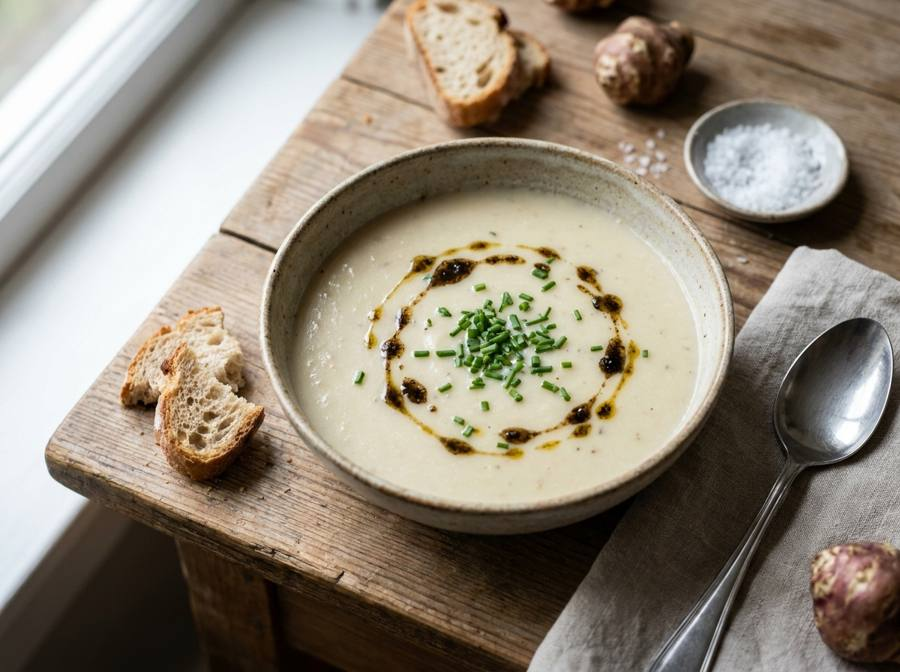

← Alle recepten

🍽4 porties
⏱15 min voorbereiden
🔥25 min bereiden
Σ40 min totaal
Ingrediënten
700 g aardperen (topinamboer), geschild en in stukken
1 ui, grof gesneden
1 prei (alleen wit en lichtgroen), in ringen
2 teentjes knoflook, fijngehakt
30 g roomboter
1 el olijfolie
1 liter groentebouillon
100 ml slagroom
1 laurierblad
zout naar smaak
versgemalen zwarte peper naar smaak
1 scheutje citroensap
bieslook, fijngesneden, om te garneren
optioneel: 1 scheutje truffelolie
Bereiding
- Verhit de boter en olijfolie in een grote soeppan op middelhoog vuur. Fruit de ui en prei 5-6 minuten tot ze zacht zijn, zonder te laten bruinen.
- Voeg de knoflook toe en bak 1 minuut mee.
- Voeg de aardperen en het laurierblad toe en roer goed.
- Giet de groentebouillon erbij, breng aan de kook en laat 20-25 minuten zachtjes koken tot de aardperen heel zacht zijn.
- Verwijder het laurierblad uit de soep.
- Pureer de soep met een staafmixer tot volledig glad.
- Roer de slagroom erdoor en verwarm de soep nog even, maar laat deze niet meer koken.
- Breng op smaak met zout, versgemalen zwarte peper en een scheutje citroensap.
- Serveer de soep warm, gegarneerd met fijngesneden bieslook en eventueel een scheutje truffelolie.
Romige Aardperensoep — https://recepten.jal.ink/romige-aardperensoep/